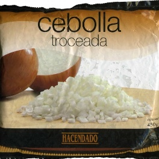
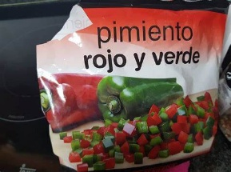
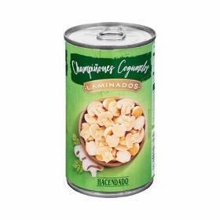
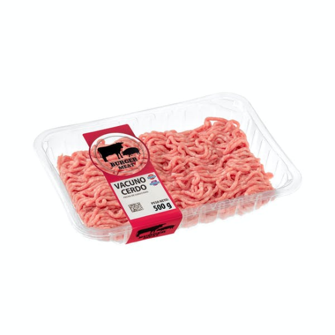
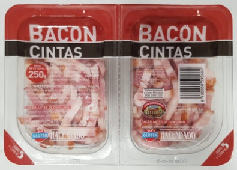
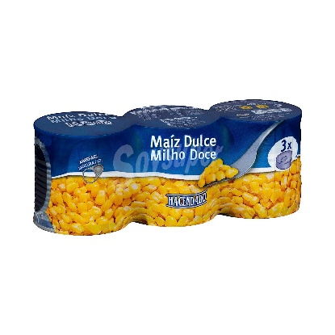
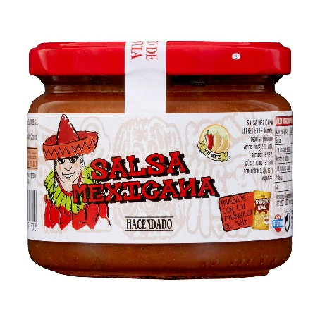
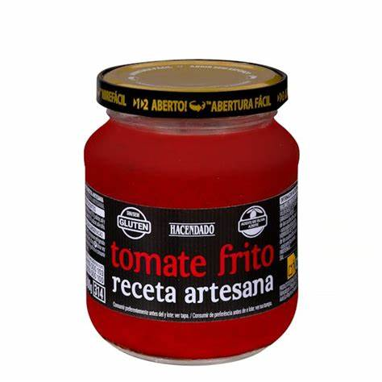
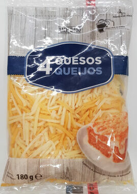
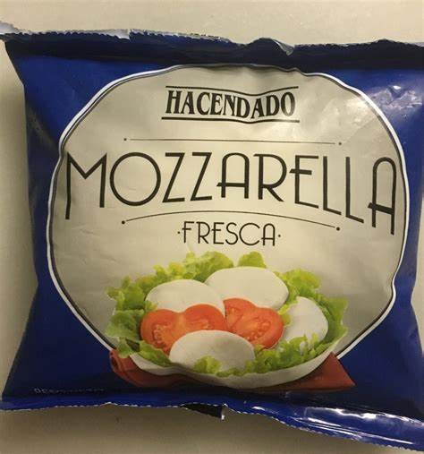
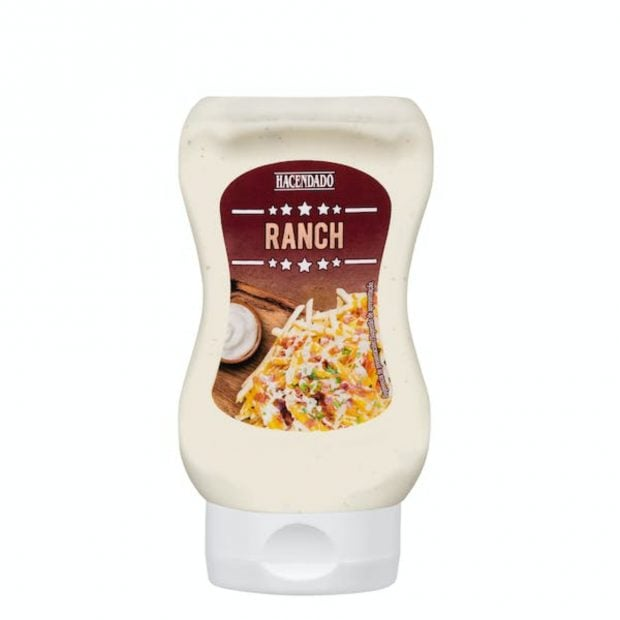
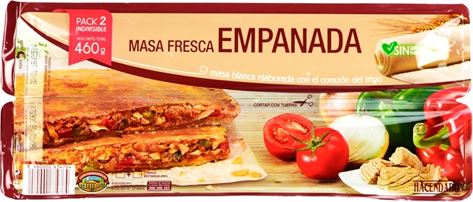
No precalientes. Ve mirando a ratos. Cuando tiene color de empanada, está lista.
Cuando saques la empanada del horno, no la dejes sobre el papel para que no quede muy blanda la parte de abajo. Ponla en la rejilla del horno (fuera del horno, claro).
Como suele sobrar relleno, puedes usarlo para hacer unas fajitas riquísimas. Solo necesitas tortillas de trigo y el relleno que te ha sobrado.
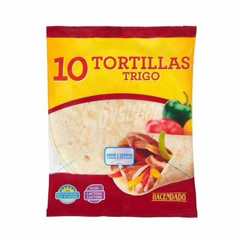